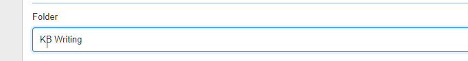
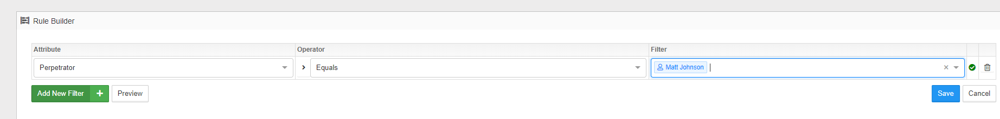
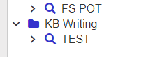
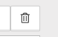

Summary: This How to demonstrates how to add extra “Groups” for investigations
Issue: How to add extra Groups to the investigation screen.
Instructions:
- Click on New investigation (bottom left), give your investigation a name and in the “Folder” field type in the name of the group you wish to create
dand press

- You must add in something to the rule builder; otherwise, this will not save. Something simple like the below would do.

- Click Save to create the group:

- You can update investigations into this group by following step 1, but instead of pressing return, use the drop-down to select the desired group. At this point, you can also delete the dummy investigation by clicking on the test investigation and then clicking delete in the top right

Submitted by: Matt Johnson
Product: SD
Affected Versions: All (How To)
Affected Module: N/A
Dev Ticket: N/A
Resolved In Version: N/A (yet)
KB Type: How To